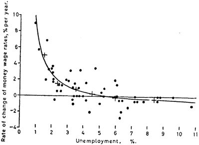
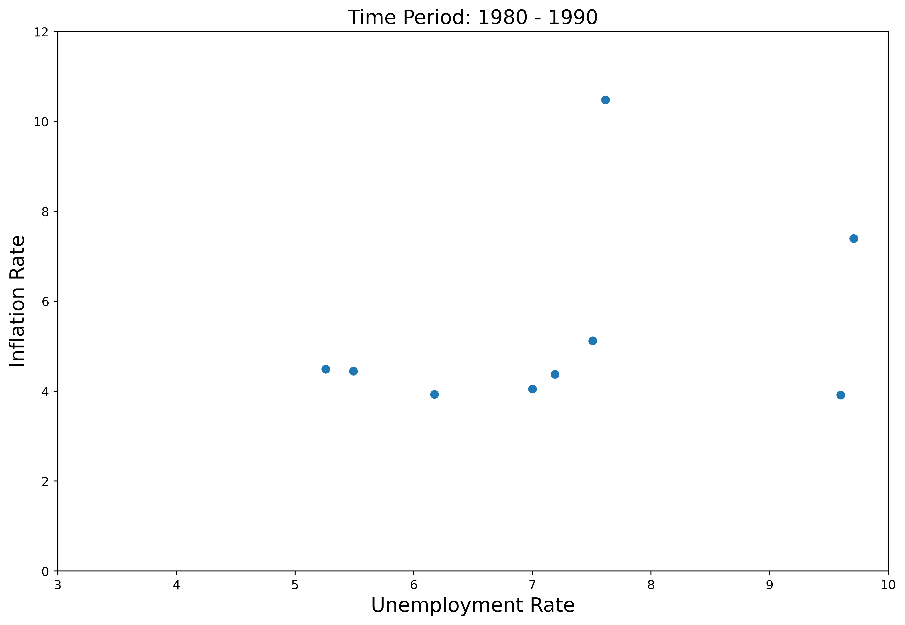
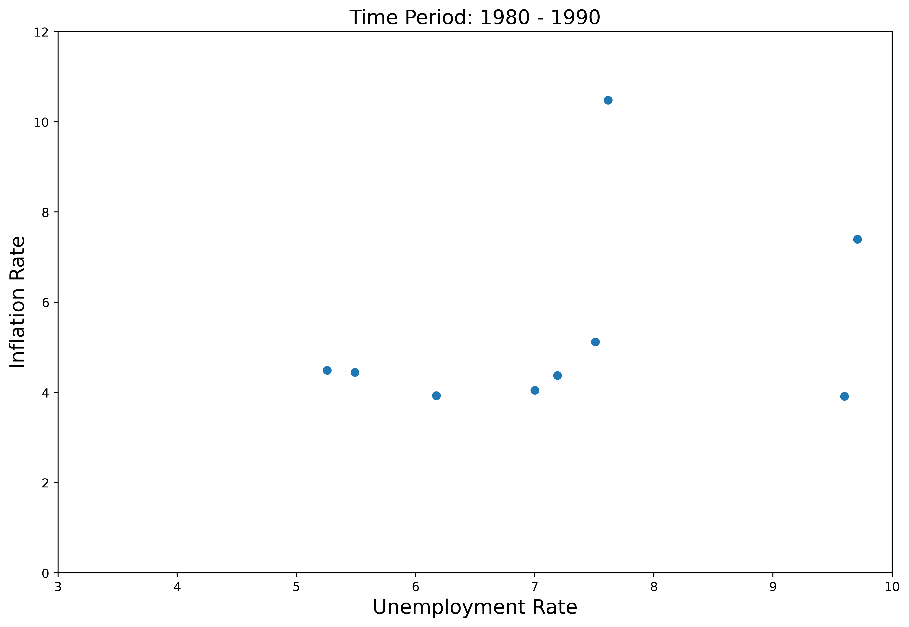

Phillips Curve¶
The Phillips Curve describes an inverse relationship between inflation and unemployment: when the inflation is low, the level of unemployment tends to be high; when the level of unemployment is low, price level tends to increase more rapidly.
In essence, the Phillips Curve characterizes a tradeoff between economic growth and inflation–we cannot have the best of both worlds. The theory claims that with economic growth comes inflation, which in turn should lead to more jobs and less unemployment.
However, empirical evidence calls Phillips Curve into question, including the stagflation period that happened during the 1970s when the economy was suffering from both a high inflation and a high unemployment rate. A neoclassical model was then introduced to address this issue.
Classical Phillips Curve¶
The classical Phillips Curve describes the relationship between inflation and unemployment: Inflation is higher when unemployment is low and lower when unemployment is high.
where \(\pi\) is the inflation rate, \(u - u^{*}\) is the unemployment gap.
Often also simplified as
where \(\pi\) is the inflation rate, \(u\) is the unemployment rate.
The relationship was originally described by New Zealand economist A.W. Phillips in his paper titled The Relation between Unemployment and the Rate of Change of Money Wage Rates in 1958, who examined data on unemployment and wages for the United Kingdom from 1861 to 1957.

The underlying logic of this inverse relationship can be explained as follows: when the demand for labor increases, the pool of unemployed workers subsequently decreases and companies increase wages to compete and attract a smaller talent pool. The cost of wages increases and companies pass along those costs to consumers in the form of price increases. Thus, a lower unemployment rate ultimately translates to a higher inflation.
Theoretically, the Phillips curve presents a menu of options for policymakers–if higher inflation actually causes lower levels of unemployment, then the government could control unemployment via monetary policy as long as it was willing to accept changes in the level of inflation.
Expectation-Augmented Phillips Curve¶
Unfortunately, economists soon learned that the relationship between inflation and unemployment was not as stable as they had previously thought.
 



What economists initially failed to realize in constructing the Phillips curve was that people and firms take the expected level of inflation into account when deciding how much to produce and how much to consume. When workers expect prices to rise, they demand higher wages. When firms expect costs to rise, they set higher prices.
Therefore, economists introduced inflation expectation into the original Phillips Curve.
where \(\pi\) is the inflation rate, \(\pi^{e}\) is the expected inflation rate, \(u - u^{*}\) is the unemployment gap.
Therefore, a given level of inflation will eventually be incorporated into the decision-making process and not affect the level of unemployment in the long run. The long-run Phillips curve is vertical, since moving from one constant rate of inflation to another doesn’t affect unemployment in the long run.
What this implies is that if the Central Bank would like to pin down inflation, they cannot do it by simply raising the interest rate (even though this is still an effective way in the short run). What is more important is to anchor people’s inflation expectations at a relatively low level. If they succeed, they can control inflation. This idea also appears to have been remarkably successful so far. Whenever it has shot above target, it has, soon enough, fallen back.
While the idea of inflation expectation looks concrete, interestingly enough, a recent paper (Rudd 2021) sets off a round of debate about the role of expectations in shaping prices in the economy, where the author argued the theory of inflation expectation “rests on extremely shaky foundations”. But still the majority of economists are optimistic about this new Keynesian model. This is an ongoing research field.
Thought experiment: Spring 2022 marks a season with high inflation. The US inflation rate was sitting at 7.87% in February 2022, compared to 1.68% last year. What would happen if people thought this high level of inflation would persist?